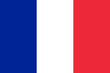
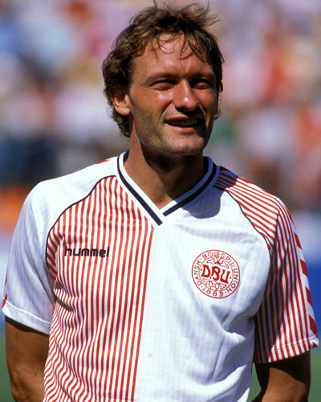

 Michel Platini - 1985
- Un triplé historique
Ainsi,
Michel Platini
devint le Ballon d'Or le plus lourd et le plus brillant de tous les temps.rés.
Nationalité : France
Né le : 21 juin 1955, à Joeuf (FRA)
Taille : 1,79
Poids : 73 kg
Poste : milieu
Clubs : AS Joeuf (1966-1972), Nancy (1972-1979), Saint-Etienne (1979-1982) et Juventus Turin (1982-1987)
Palmarès de joueur : Championnat d'Europe des nations 1984 ; Coupe intercontinentale des nations 1985 ; Coupe intercontinentale des clubs 1985 ; Supercoupe d'Europe 1984 ; Coupe des champions 1985 ; Coupe des Coupes 1984 ; Championnat de France 1981 ; Championnat d'Italie 1984 et 1986 ; Coupe de France 1978 ; Coupe d'Italie 1983 ; meilleur buteur de l'Euro 1984 (9 buts) ; meilleur buteur du Championnat d'Italie 1983 (16), 1984 (20) et 1985 (18)
Bilan en équipe nationale : 72 sélections A, 41 buts (1976-1987)
Bilan en phase finale de Coupe du monde : 3 participations (3e en 1986 ; 4e en 1982), 14 matches, 5 buts (1978-1986)
Palmarès Ballon d'Or : vainqueur en 1983, 1984 et 1985 et (3e en 1977 et 1980)
Carrière d'entraîneur :France A (novembre 1988-juillet 1992)
Classement du Ballon d’Or France Football 1985 :
Michel Platini (France / Juventus Turin),
127 pts.

Preben Elkjær Larsen (Danemark / Hélas Verone),
71 pts.
Bernd Schuster (RFA / FC Barcelone),
46 pts.
Retour à l'accueil